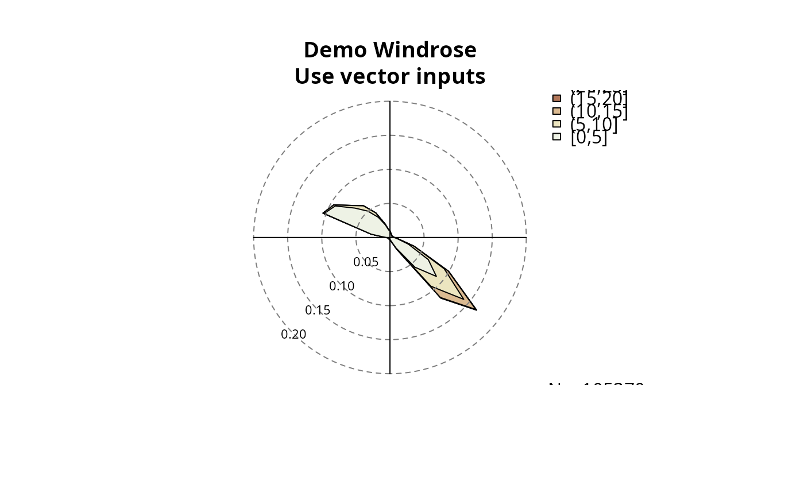
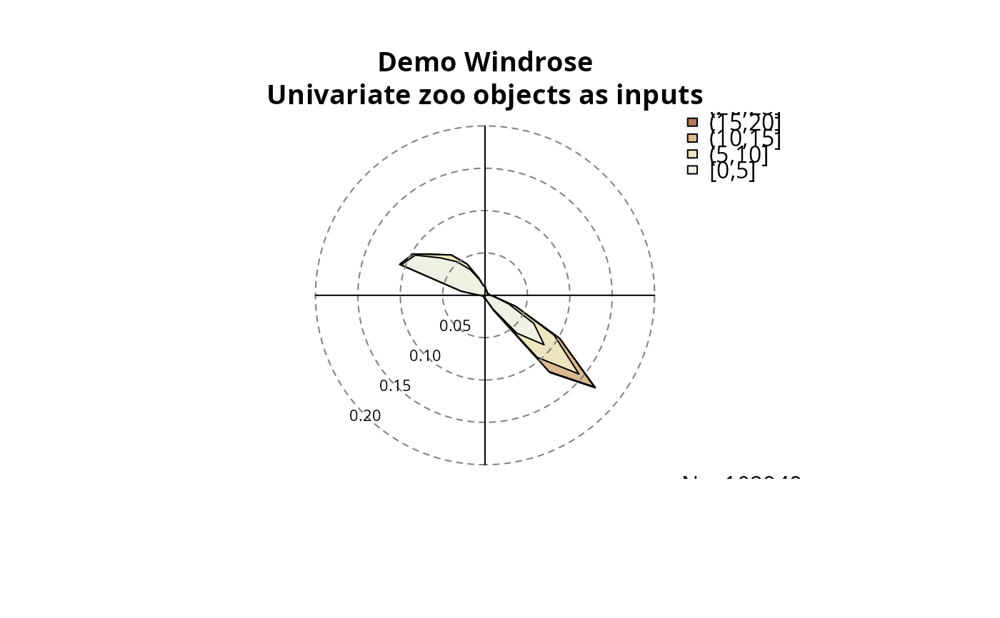
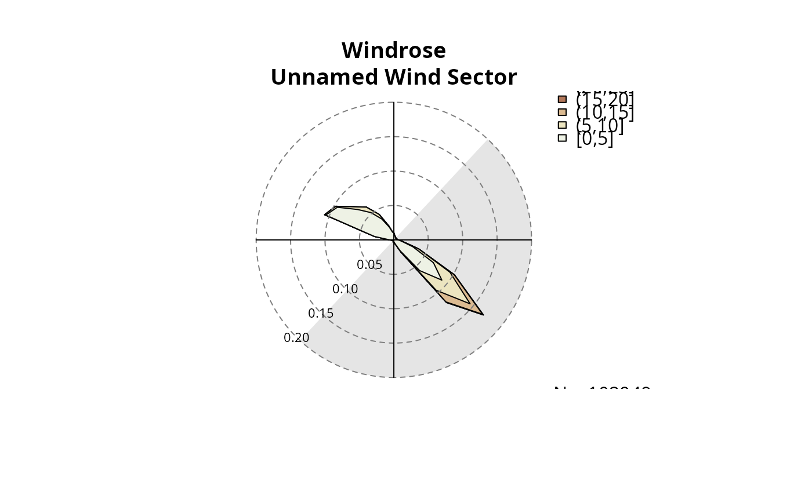
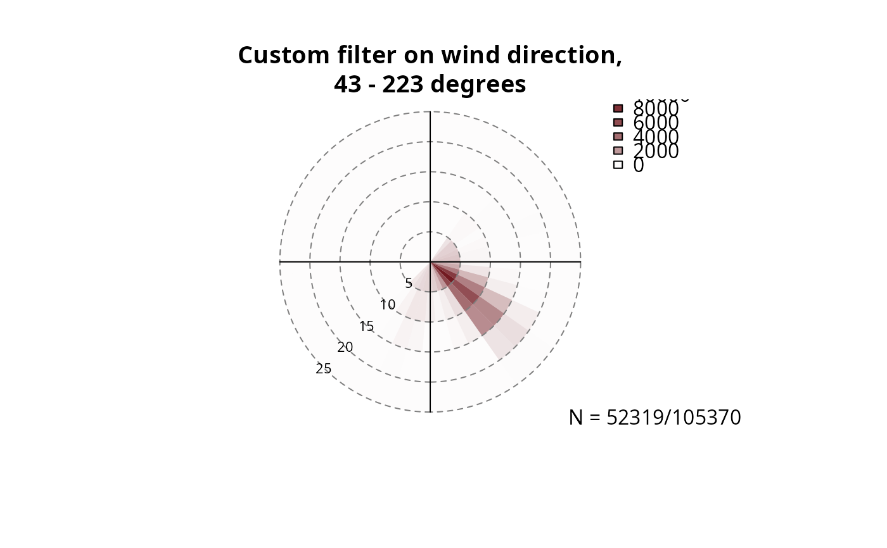
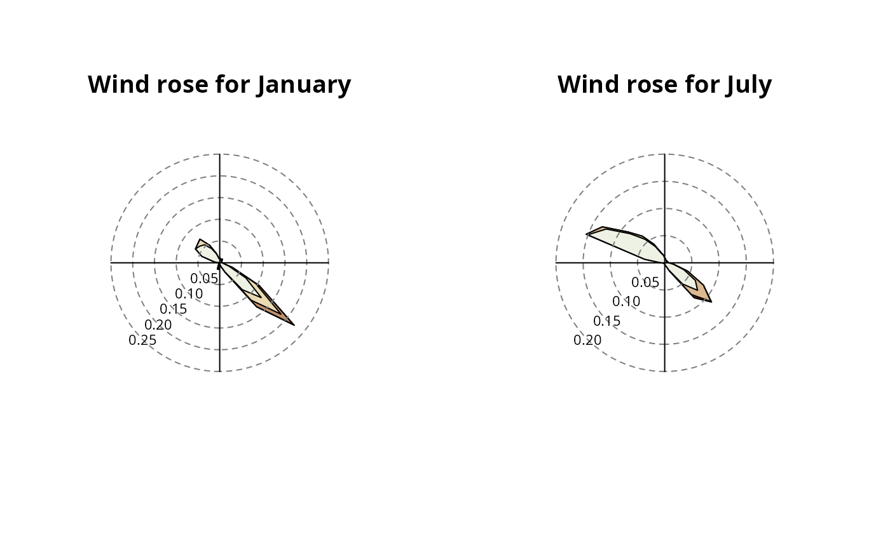
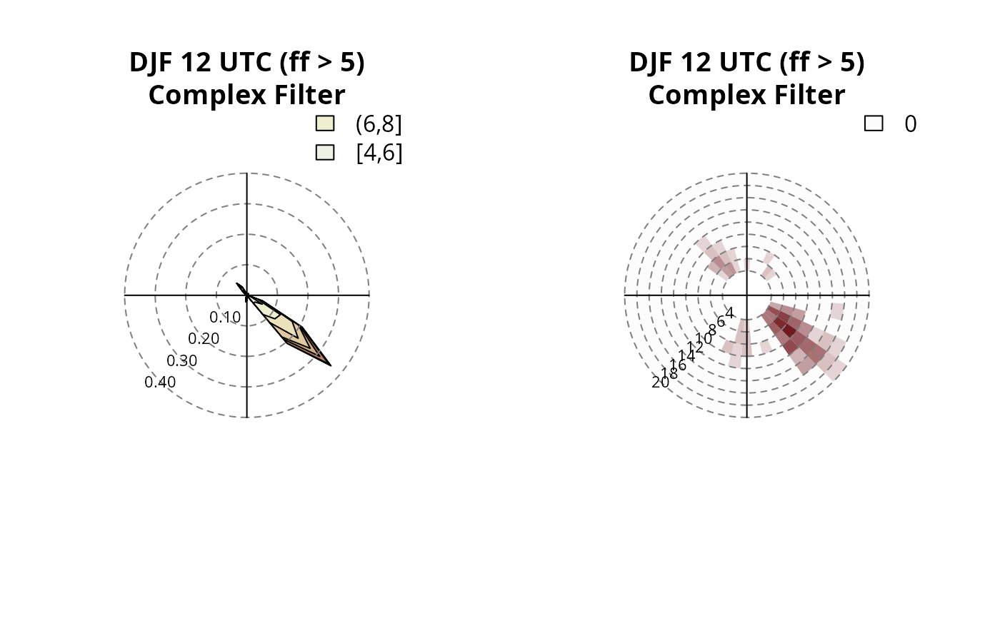

Windrose plot, can handle two type of plots (see type) using
the same information.
# S3 method for default windrose(x, ff, interval = 10, type = "density", windsector = NULL, windsector.col = "gray90", main = NULL, hue = c(10, 100), power = 0.5, ..., dd = NULL, filter = NULL, ffvar = "ff", ddvar = "dd", breaks = NULL, legend.pos = c("right", "left"), legend.title = NULL, labels.angle = 225)
Arguments
| x | either an univariate object ( |
|---|---|
| ff | zoo object or numeric vector with sind speed data ( |
| interval | numeric, a fraction of 360. If 360 cannot be devided by
|
| type |
|
| windsector | list, matrix, or data frame for highlighting one or multiple wind sectors. See 'Examples' ('Highlighting wind sectors'). |
| windsector.col | color of the wind sector (if provided). |
| main |
|
| hue | numeric vector of length 1 or two (for |
| power | numeric |
| ... | additional optional arguments forwarded, see 'Details'. |
| dd | can be used if univariate objects or vectors are provided for wind speed and meteorological wind direction (see 'Details' section). |
| filter | a custom set of filter rules (see |
| ffvar | string, custom name of the wind speed variable in |
| ddvar | string, custom name of the wind direction variable in |
| breaks |
|
| legend.pos | character, either |
| legend.title |
|
| labels.angle | numeric, default is |
Details
The windrose function can be used in different ways.
The main purpose is to plot (conditional) wind roses for
foehnix objects (uses windrose.foehnix), but there is
this generic windrose.default method which can be used to
create wind roses on non-foehnix objects.
windrose.default can either with called with two univariate
inputs for wind direction and wind speed, or with a multivariate zoo
object or data.frame which provides both, wind speed and wind
direction. Moreover, additional variables which can be used in combination
with the filter option. Examples are provided in the example section.
Univariate inputs/vectors: the windrose.default function requires both,
wind direction and wind speed. If univariate objects/vectors are used at least
the two inputs dd (identical to x) and ff have to be specified.
dd (x) is the meteorological wind direction in degrees
(]0, 360[, 0/360 is 'wind from north', 90 'wind from east',
180 'wind from south', and 270 'wind from west').
ff has to be of the same length as dd containing the corresponding
wind speed.
Multivariate input: rather than providing dd (x) and ff
a multivariate zoo object or data.frame can be provided when
calling the function containing (at least) wind direction and wind speed. By
default, the method expects the wind direction variable to be named
"dd", the wind speed named "ff". Custom names can be
specified using the two input arguments ffvar and ddvar.
Custom filter: the optional filter input can be used if input
x is a multivariate object and provides a convenient
way to subset/filter the data. A detailed description how to define
the filter rules can be found on the documentation page of
the foehnix_filter method.
Additional optional arguments: The function allows to provide additional arguments for better customization. These arguments are forwarded to selected calls. Currently implemented:
For
type = "density":border,lty, andltyforwarded topolygon(...).
Examples
# Loading observation data for station Ellboegen. # The object returned is a zoo time series object # containing (see ?ellboegen). data <- demodata("ellboegen") class(data)#> [1] "zoo"head(data)#> dd ff rh t #> 2006-01-01 01:00:00 171 0.6 90 -0.4 #> 2006-01-01 02:00:00 268 0.3 100 -1.8 #> 2006-01-01 03:00:00 115 5.2 79 0.9 #> 2006-01-01 04:00:00 152 2.1 88 -0.6 #> 2006-01-01 05:00:00 319 0.7 100 -2.6 #> 2006-01-01 06:00:00 36 0.1 99 -1.7# Extract dd/ff and create a windrose, # using two vectors as input: dd <- as.vector(data$dd) ff <- as.vector(data$ff) windrose(dd, ff, main = "Demo Windrose\nUse vector inputs")# Using univariate zoo objects as input: windrose(dd = data$dd, ff = data$ff, main = "Demo Windrose\nUnivariate zoo objects as inputs")# Or specify a multivariate zoo object or data.frame # object on input x: windrose(data, main = "Demo Windrose\nUse multivariate zoo object")# Custom names for ff/dd copy <- data names(copy)[1:2] <- c("wind_dir", "wind_spd") windrose(copy, main = "Demo Windrose\nMultivariate zoo, custom names", ddvar = "wind_dir", ffvar = "wind_spd")# Highlighting wind sectors windrose(data, windsector = list(c(43, 223)), main = "Windrose\nUnnamed Wind Sector")windrose(data, windsector = matrix(c(43, 223), nrow = 1), main = "Windrose\nUnnamed Wind Sector") windrose(data, windsector = data.frame(from = 43, to = 223), main = "Windrose\nUnnamed Wind Sector") windrose(data, windsector = list(A = c(100, 160), B = c(310, 10)), main = "Windrose\nNamed Wind Sector")sectors <- matrix(c(100, 160, 310, 10), nrow = 2, byrow = TRUE, dimnames = list(c("Down", "Up"), NULL)) windrose(data, windsector = sectors, main = "Windrose\nUnnamed Wind Sector")sectors <- matrix(seq(0, 350, by = 10), ncol = 2, byrow = TRUE) windrose(data, windsector = sectors, main = "Yey")# Custom filter: for details, see ?foehnix_filter # Example 1: # - Plot windrose for all observations where the wind # direction was within 43-233 degrees (south southeast) filter1 <- list(dd = c(43, 223)) windrose(data, main = "Custom filter on wind direction,\n43 - 223 degrees", type = "hist", filter = filter1)# Example 2: # - Plot windrose for all observations where the wind # speed was > 5 meters per second. filter2 <- list(ff = function(x) x > 10) windrose(data, main = "Custom filter on wind speed\nonly observations where ff > 5", type = "hist", filter = filter2)# Example 3: # - Plot windrose for specific months (create new variable # 'month' in advance): data$month <- as.POSIXlt(index(data))$mon + 1 par(mfrow = c(1,2)) windrose(data, main = "Wind rose for January", filter = list(month = function(x) x == 1)) windrose(data, main = "Wind rose for July", filter = list(month = function(x) x == 7))# Example 4: # Similar to example 3, but for data$hour <- as.POSIXlt(index(data))$hour par(mfrow = c(1,2)) windrose(data, main = "Wind rose for midnight (00 UTC)", filter = list(hour = function(x) x == 0)) windrose(data, main = "Wind rose for noon (12 UTC)", filter = list(hour = function(x) x == 12))# Example 5: # A more complex filter: midnight, winter (Dez/Jan/Feb) # for wind speeds exceeding 5 meters per second. filter5 <- function(x) x$month %in% c(12, 1, 2) & x$hour == 0 & x$ff > 5 par(mfrow = c(1,2)) windrose(data, main = "DJF 12 UTC (ff > 5)\nComplex Filter", filter = filter5) windrose(data, main = "DJF 12 UTC (ff > 5)\nComplex Filter", filter = filter5, type = "hist")